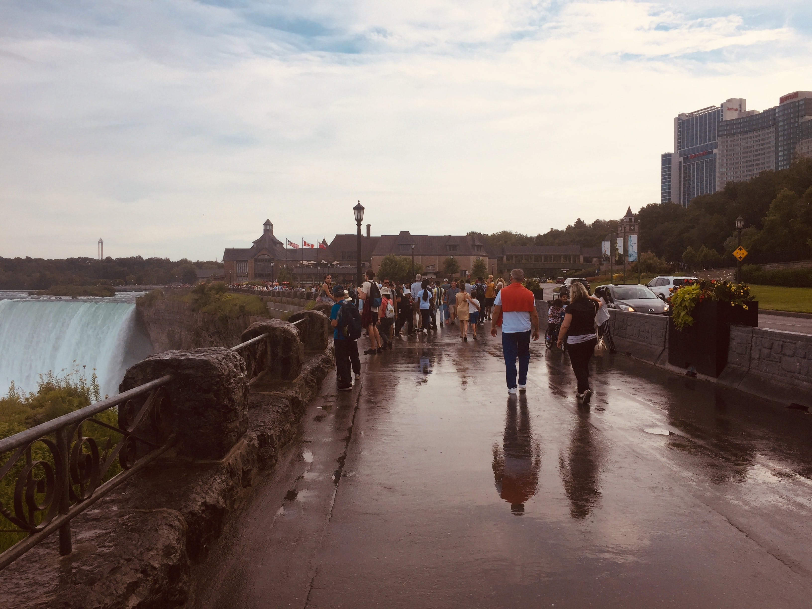
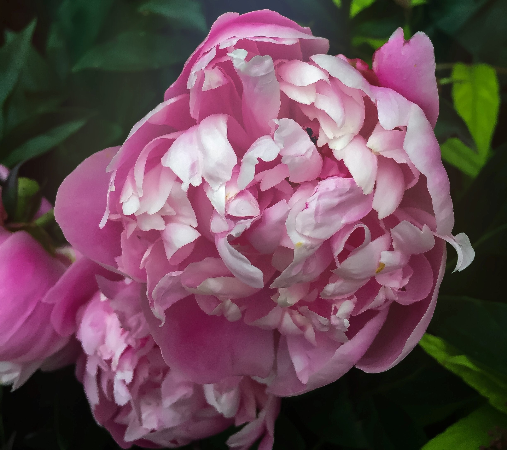
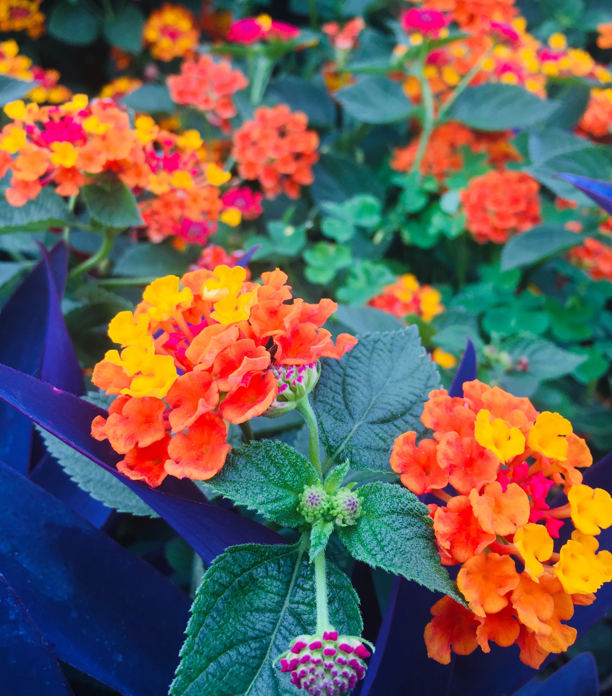
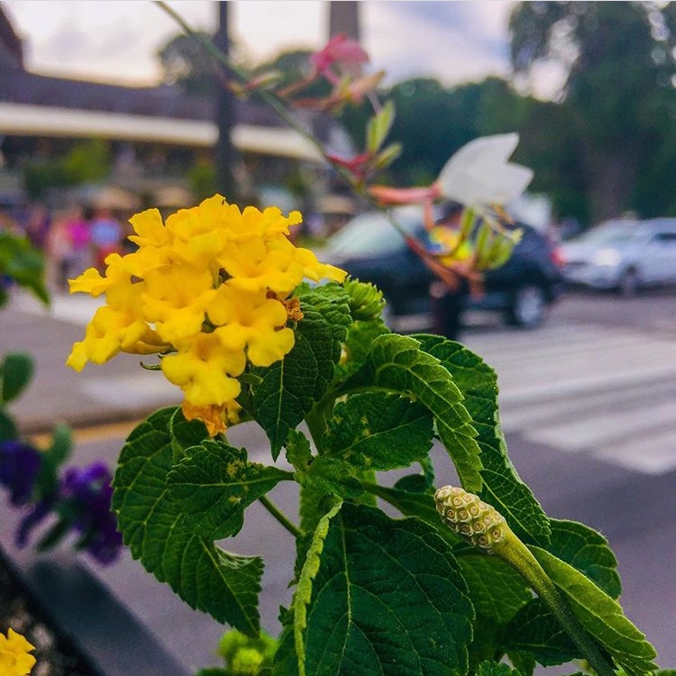

Hover your mouse over a picture to learn more about it!

I took this picture on a rainy day at Niagara Falls in the summer of 2017. I was walking past the falls,
smelling the water and the rain simultaneously, and enjoying the business and excitement of everyone around me.
At this moment, the clouds began to cover the sun, just enough to create the most beautiful colours of everything
around, and I knew I had to capture this moment. The left side shows the Canadian side of the falls, and in the
middle, people walking by to admire it, with some even stopping to take pictures. You can almost smell the rain in
this picture, and I particularly love the colour gradient of this picture - it isn't too bright or sunny, but just
bright enough to create a beautiful burgundy-ish climate. I also admire how this picture captures so many things,
from the fall to the buildings around. Looking at this scenery with just the bare eyes would not capture all this
scenery at once because our eyes can only focus on so much.

Here is a close-up of a flower that I found in my backyard. I have tried in vain to find out what its name is,
but I admire it every time I see it. I can't get over how each petal could not be more different from another,
and each pattern seems almost arbitrary. And yet, they all come together to form such a breath-taking flower.
It reminded me of how we are all individually like each petal, very different and unique in our own way. And
instead of dismissing our differences or thinking some are better than others, we can all come together to form
something beautiful. I love how this photo captures so much detail in each petal, from each crease to every curve.
From the lighter shades of pink to the darker shades of pink, and even some yellow.
I took this shot last summer. A friend of mine did the makeup (this is one of her friends) and asked if I could take
some pictures. I gladly agreed, and we went outside because it was a beautiful day and the sun produce magnificent
lighting to take pictures. I have always had a soft spot for close-ups with a blurred background, and looking at this
picture, I remember why. The detail in the foreground without the distraction of the background makes the picture stand
out. And even though the background is blurred out, it significantly contributes to the beauty of this picture. I also
thought the sun added a little extra to the photo, like the cherry on the cupcake. I especially love the streak of light
that goes across the photo to add a final touch. This picture has not been edited, and even in its raw form, looks breathtaking.

I found these flowers at Canada's Wonderland, and immediately I knew I had to capture them. It has one of the most beautiful
colour palettes I have seen on a flower, and it smelled just as amazing. Most other flowers usually have just one or two
colours. However, here you can see touches of yellow, orange, purple, pink and green. These are colours I ordinarily would
not throw together, and for any other thing but a flower (take a website, for example), this would not be the most attractive
colour scheme. Knowing this, I was in awe of how this flower could combine all these colours in such a beautiful way. Nature
really does have the most daring and gorgeous aspects of life.
This picture was also taken at Niagara Falls in the summer of 2017. After taking so many pictures with the falls as a foreground,
I was curious to see how it would work as a background, and I was not disappointed. You can still make out some parts of the
background, such as the bridge, the roads beneath, one of the buildings, and the surrounding trees and plants. The watch made a
lovely foreground and was plain enough so that the picture was not too busy. Most pictures I take are the opposite way around - a
busy and detailed foreground, with a plain background to support it. So I loved the idea of thinking outside of the box and doing
something different, and I was very satisfied with how the picture turned out. I also was intrigued by how crucial a role the
background played in this photo. It wasn't just something to complement or support but is equally as crucial to the photo as a whole.

As you can tell by now, I have a soft spot for flowers and nature in general when it comes to pictures I take, but I can't help it.
I found this flower growing on the sidewalk in front of my high school in the spring of 2018. Spring is hands down my favourite season,
not just because of the beautiful scenery that comes as a result, but also because it is hoodie weather, and if I could, I would wear
hoodies 24/7 without shame. In my excitement about the weather, I set out to find plants and flowers that had begun to grow again so
that I could get into the spring mood. I walked past this flower quite a few times without taking much time to observe it. After I
failed to locate any more fully grown flowers, I decided to capture this one because why not. I'm definitely glad I did because looking
at it from my camera lens gave me a whole different perspective and appreciation of it that I didn't have when I was walking past it.
Here is one of my absolute favourite people on earth on her birthday last year. She has one of the most radiant smiles that I knew I just
had to capture. We were playing around while I was taking random pictures of her. This picture was one of the few that wasn't planned and
she wasn't posing for. But in the moment of laughing around, I accidentally got this shot, and it was one of my favourites from the night
(I think some of the best pictures are the ones that are spontaneous because they really capture the moment with such authenticity that you
rarely get with planned poses). I caught her laughing so hard that her head started to hurt, which is why she has one hand on her head. And
I think the angle of this shot did justice to her gorgeous pearly whites. As the saying goes, "smile while you still have teeth!"